Labo des styles
Huit directions pour « Mystères » et « Folklore », sur de vraies données publiques (Wikipédia, Wikidata, Wikimedia Commons). Le contenu est de démonstration : statuts non validés, brouillons IA, aucune relecture. La planche de brevet (science) n'est pas touchée.
Mystères et enquêtes documentées

M1RDossier tapé, réalisteM1 avec les détails d'un vrai dossier dactylographié : chaque lettre légèrement différente, une faute rayée au X, agrafe, plis du papier, pile de feuilles, photo scotchée, tampon d'encre usé, tampon de date de vérification.Risque : Le plus crédible et le plus tactile. Chaque détail doit rester un signal (date de vérification, statut, pièce jointe), jamais du décor gratuit ; un excès de « vieux papier » tue la lisibilité.
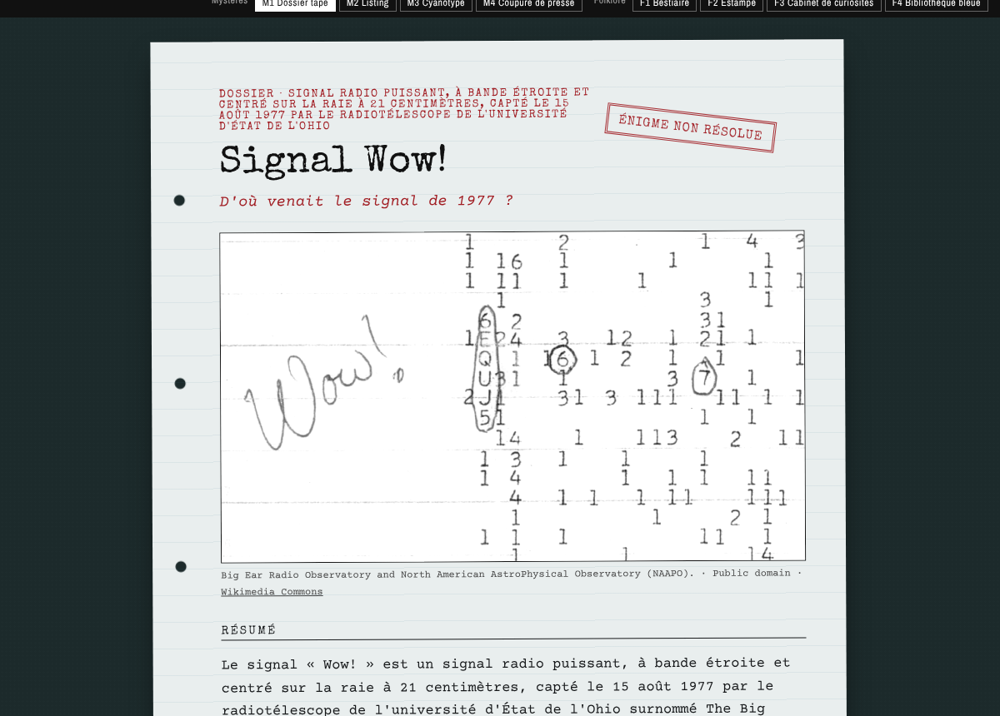
M1Dossier tapéUne chemise d'enquête : papier pelure, machine à écrire, tampon rouge, perforations. Les titres se tapent à l'écran.Risque : Très lisible et très « enquête », mais déjà vu ; le tampon doit rester une étiquette de statut, pas un effet.
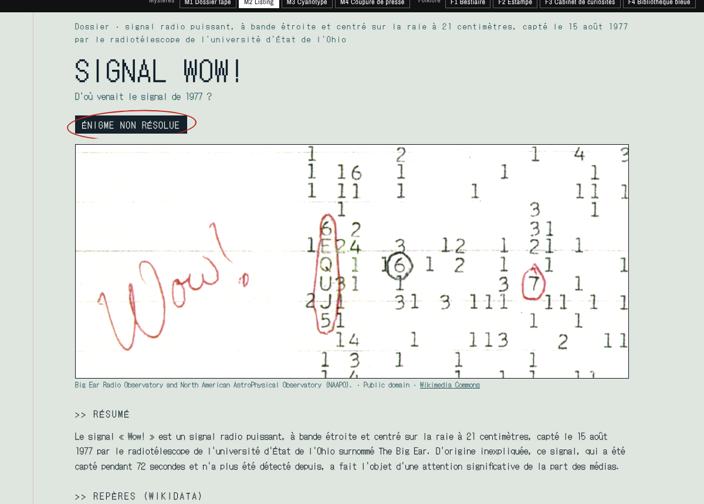
M2ListingPapier d'imprimante à bandes vertes, matrice de points, stylo rouge. C'est littéralement la matière du signal Wow!.Risque : Très fort pour l'astronomie et l'informatique, trop étroit pour un mystère historique ou archéologique.
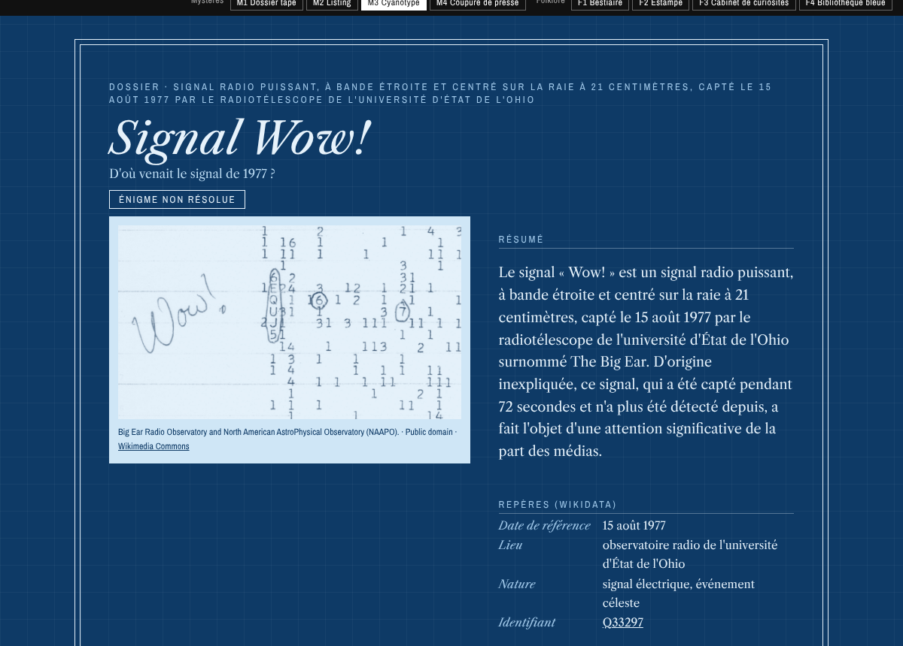
M3CyanotypeBleu de Prusse et blanc : l'estampe cyanotype des premiers herbiers. Les images deviennent des tirages bleus, uniformes d'un dossier à l'autre.Risque : Magnifique et très cohérent ; la lecture longue en blanc sur bleu fatigue, et le bleu se rapproche de la planche scientifique.
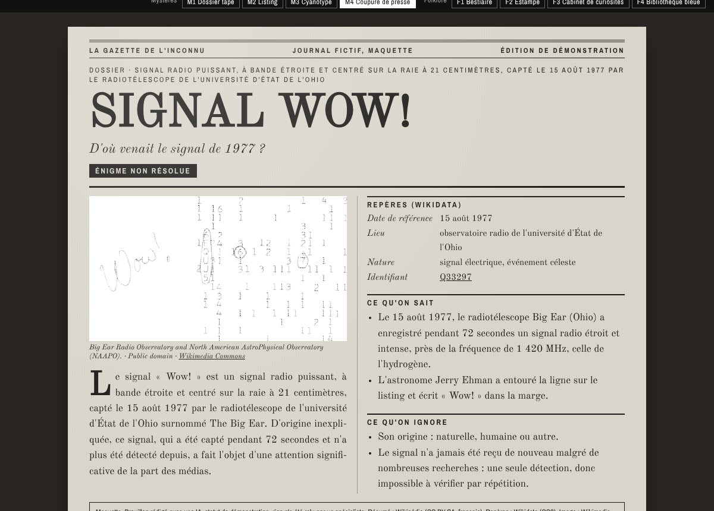
M4Coupure de presseUne page de journal ancien : colonnes, filets, titre massif, trame d'imprimerie sur les images. Fait parler l'histoire du mystère.Risque : Le plus lisible et le plus vivant pour les mystères historiques ; attention à ne pas imiter un vrai journal (ici, un titre fictif clairement marqué).
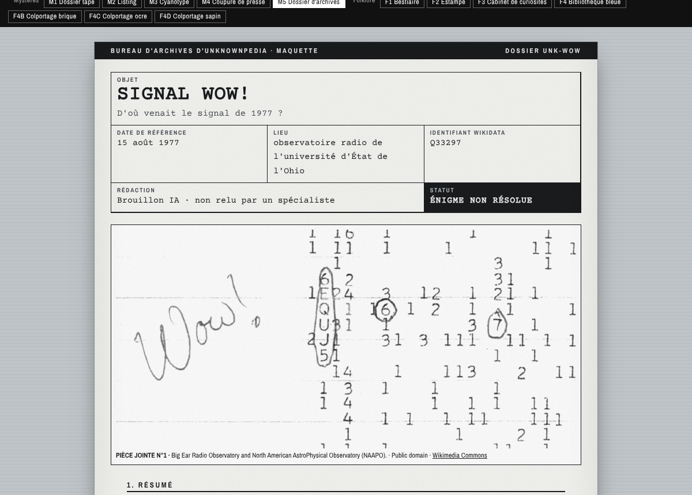
M5Dossier d'archivesUn formulaire d'archives sobre : en-tête à champs, sections numérotées, pièces jointes, photocopie. Ce qu'on ignore y est marqué « non documenté » en bande hachurée : l'inconnu devient une information visible.Risque : Le plus pro et le plus crédible. Danger : l'allure « agence secrète » peut flatter le complotisme ; ici l'agence est fictive, le ton neutre, rien n'est « caviardé ».
Mythes et folklore
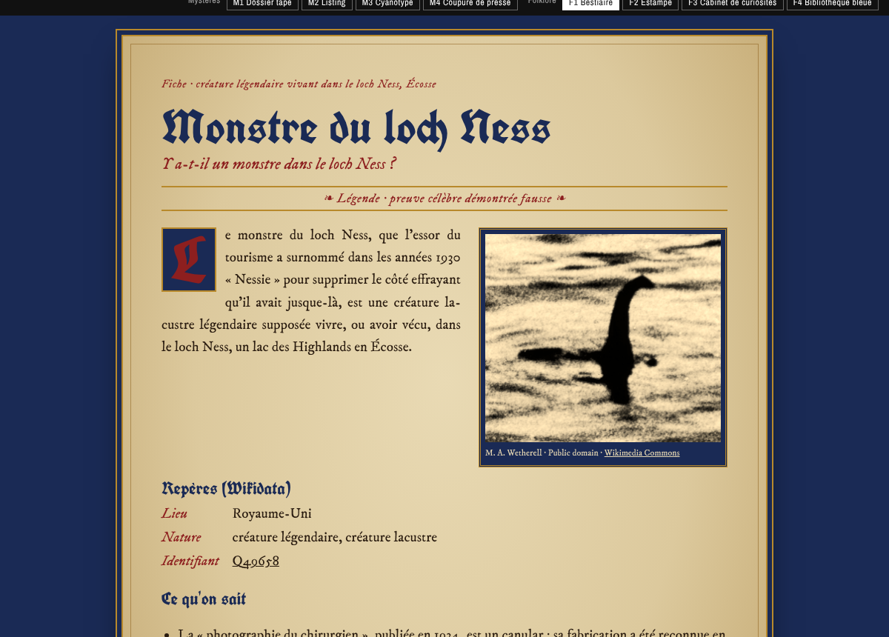
F1BestiaireUn manuscrit enluminé : lettrine peinte, bleu outremer, vermillon, filets d'or, rubrique rouge pour le statut. Le folklore comme patrimoine, pas comme preuve.Risque : Le plus évocateur ; le parchemin peut faire passer une légende pour une source ancienne. Le statut en rubrique doit être très visible.
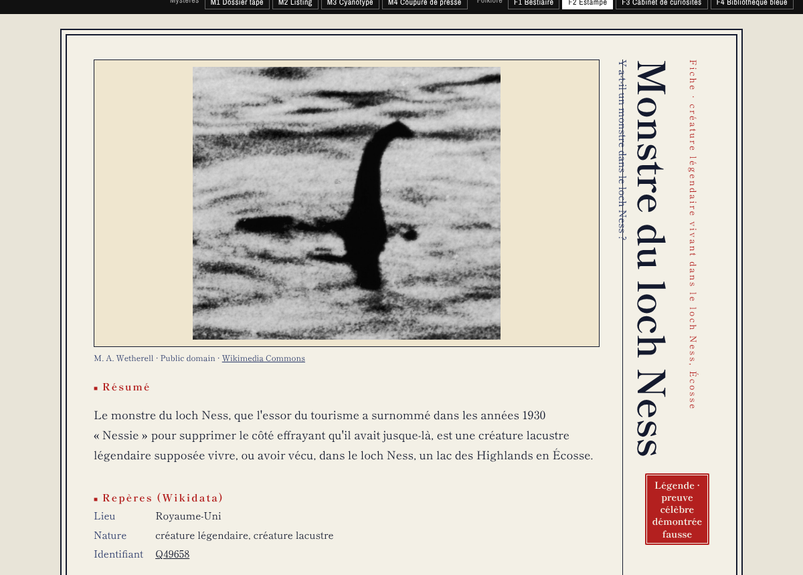
F2EstampeUne estampe japonaise : titre vertical, sceau vermillon pour le statut, trait d'encre et à-plats. Idéal pour les yōkai, moins pour les légendes occidentales.Risque : Très beau mais culturellement spécifique : à réserver aux dossiers japonais ou en faire un thème d'exception, sinon contresens.
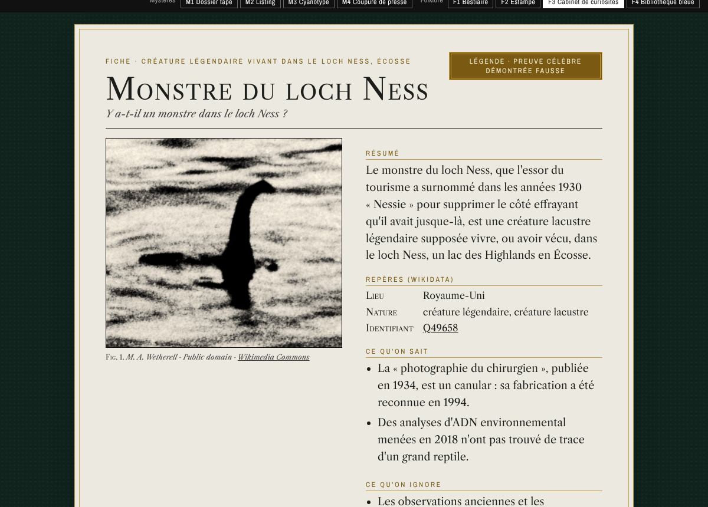
F3Cabinet de curiositésÉtiquettes de spécimens sur fond vert sombre : planches numérotées, filets laiton, légendes en petites capitales. Traite la légende comme un objet de collection à classer.Risque : Le plus sobre et le plus « sérieux » : il rassure, mais risque de donner à une légende l'allure d'une espèce observée. Le statut doit trancher.
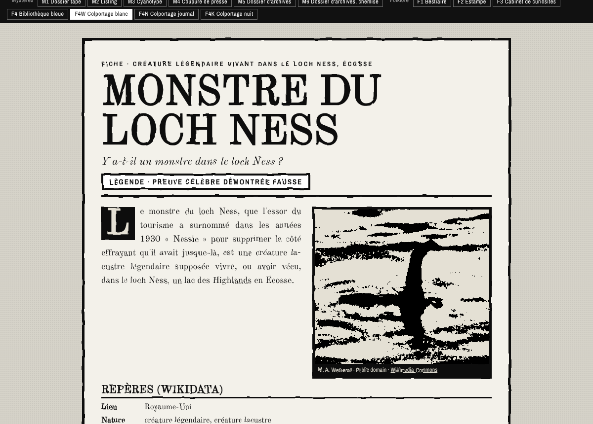
F4WColportage blancPapier blanc cassé, encre noire, gravure sur bois : la version la plus sobre et la plus lisible.Risque : Même grammaire que F4 (gravure sur bois, capitales, filets épais), sans couleur. À juger sur la lisibilité et le caractère.
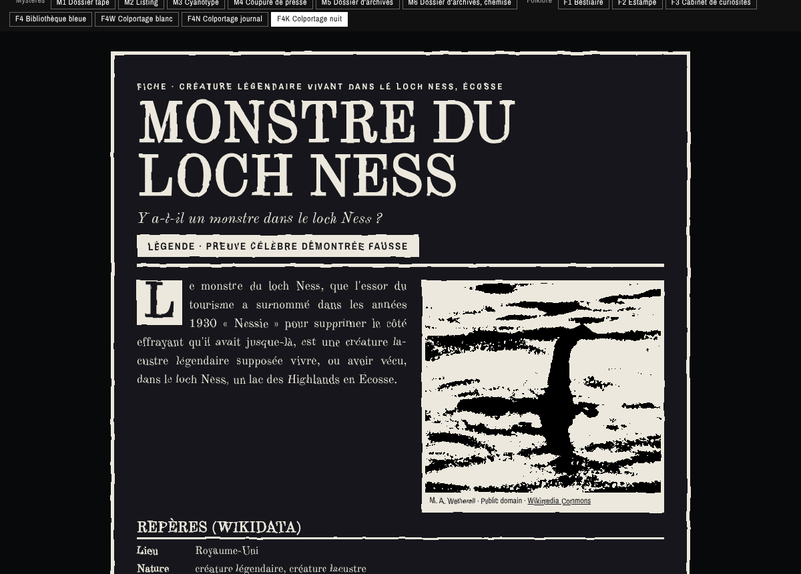
F4KColportage nuitMode sombre : papier noir, encre ivoire. L'image reste en gravure noir et blanc sur une vignette claire.Risque : Même grammaire que F4 (gravure sur bois, capitales, filets épais), sans couleur. À juger sur la lisibilité et le caractère.
Visualisations du « centre » de chaque univers
Vingt dossiers par univers, vus de cinq façons chacun (mappemonde, strates du temps, registre, étagère, âge et attention ; planisphère, arbre des familles, abécédaire, colonnes de statut, cabinet). Données réelles de Wikidata ; ce qui manque est montré, pas caché.
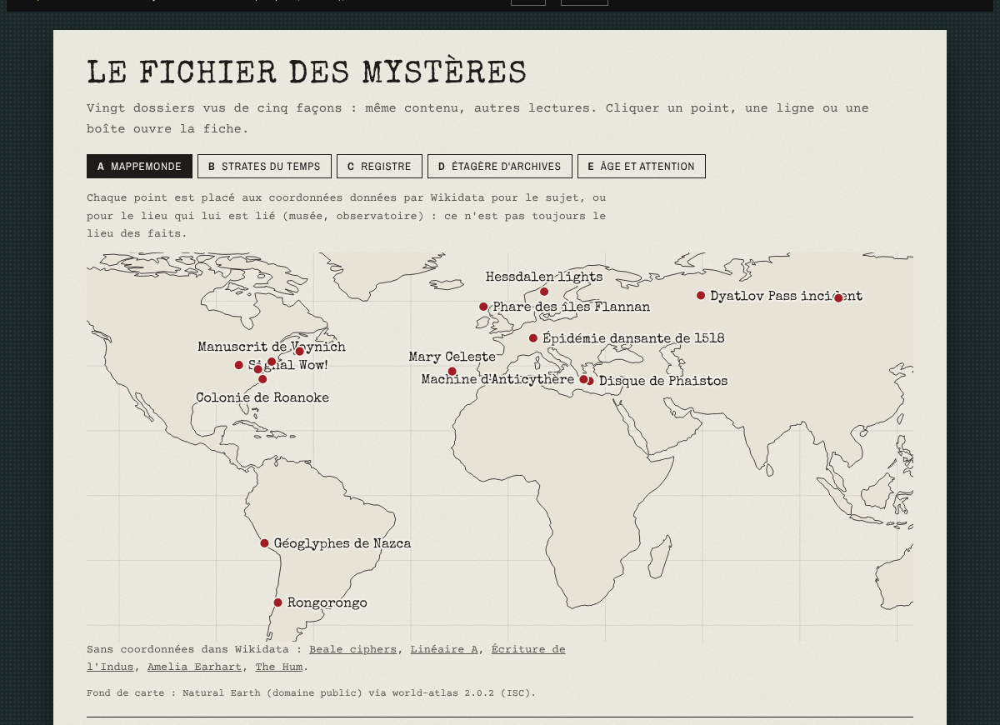
MystèresLe fichier des mystèresCinq vues sur 20 énigmes documentées.
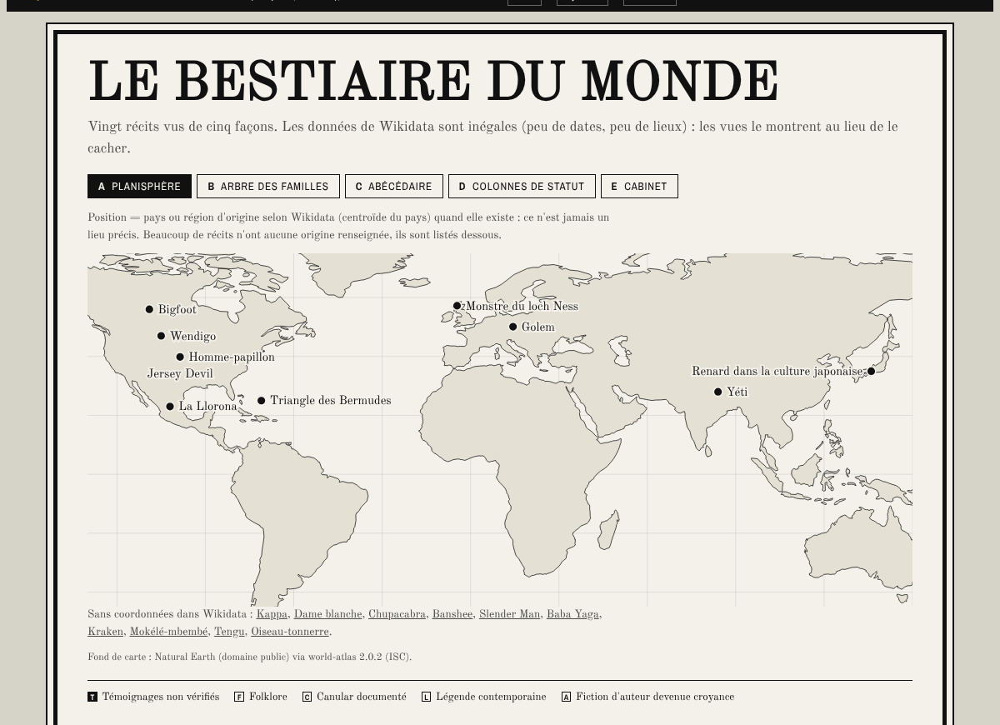
FolkloreLe bestiaire du mondeCinq vues sur 20 récits populaires, en clair et en nuit.
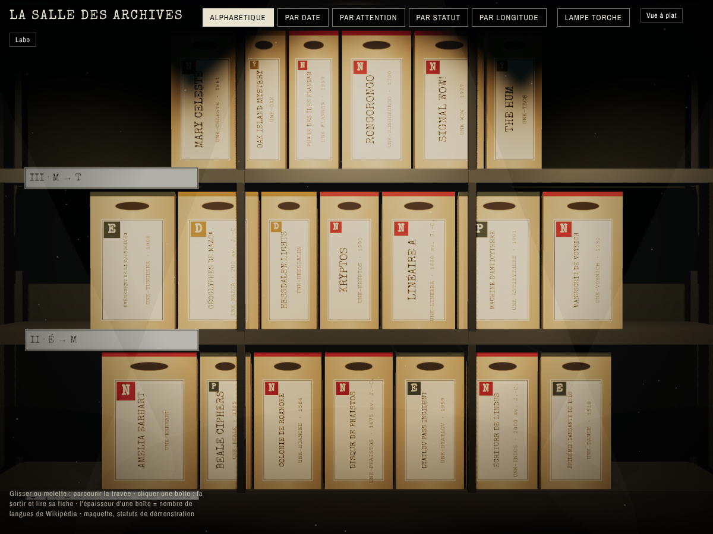
Mystères · 3DLa salle des archivesUne travée d'étagères en 3D : 20 boîtes, tri animé, lampe torche.
Passer d'un monde à l'autre
MenusSept menus pour changer de mondeOnglets de chemise, cadran, intercalaires, panneaux de direction, échantillons de papier, trois portes, cartouche de carte.
TransitionsSept passagesIris, plongée dans le vide, calque, négatif, chemise, strates, lampe torche, sur les vraies pages Science, Mystères et Folklore.
DéfilementLa matière change en défilantCouleurs, cadre, grain, police et titre glissent d'un monde au suivant.